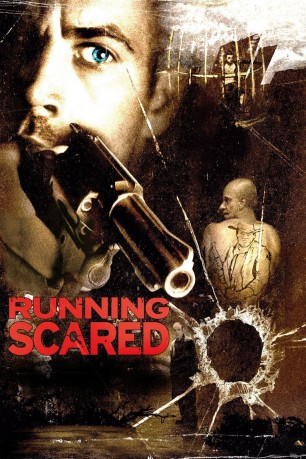

#1063 Running Scared
 
 IMDB-Wertung: 7.4 / 10
IMDB-Wertung: 7.4 / 10  Metascore: 41
Metascore: 41 
Der Kriminelle Joey muss nach einem missglückten Deal, durch den zwei korrupte Polizisten starben, die Mordwaffe verschwinden lassen. Vorerst versteckt er sie bei sich im Keller. Was er dabei nicht ahnt: sein Sohn und dessen russischer Freund Oleg beobachten ihn dabei und letzterer steckt sie sich ein, um kurze Zeit später damit im Haus nebenan auf seinen Vater Anzor zu schießen. Alarmiert durch die Schüsse rennt Joey zu seinen Nachbarn und erfährt vom angeschossenen Mann, dass Oleg mit Joeys versteckt geglaubter Waffe die Schüsse abfeuerte und nun flüchtet. Joey macht sich sofort auf die Suche nach dem Jungen und der Waffe, damit diese die Polizei nicht auf seine Spur bringt. Doch wie der Zufall es so will, wechselt die Waffe nicht nur einmal in dieser Nacht ihren Besitzer...
Jahr: 2006
Dauer: 122 Minuten
FSK: 16
Land: Deutschland Studio: 3L FilmverleihTonspuren: DTS - ,
Untertitel: Deutsch,
Auflösung: 1080p (1920x816) Größe: 13824 MB
Genre: Action, Krimi, Drama, Thriller
Regisseur: Wayne Kramer
Drehbuch: Wayne Kramer
Soundtrack: Mark Isham
Darsteller:
 Paul Walker als Joey Gazelle
Paul Walker als Joey Gazelle Cameron Bright als Oleg Yugorsky
Cameron Bright als Oleg Yugorsky Vera Farmiga als Teresa Gazelle
Vera Farmiga als Teresa Gazelle Chazz Palminteri als Detective Rydell
Chazz Palminteri als Detective Rydell Karel Roden als Anzor Yugorsky
Karel Roden als Anzor Yugorsky Johnny Messner als Tommy 'Tombs' Perello
Johnny Messner als Tommy 'Tombs' Perello Ivana Milicevic als Mila Yugorsky
Ivana Milicevic als Mila Yugorsky- Alex Neuberger als Nicky Gazelle
 Michael Cudlitz als Sal 'Gummy Bear' Franzone
Michael Cudlitz als Sal 'Gummy Bear' Franzone Bruce Altman als Dez
Bruce Altman als Dez Elizabeth Mitchell als Edele
Elizabeth Mitchell als Edele Arthur J. Nascarella als Frankie Perello
Arthur J. Nascarella als Frankie Perello John Noble als Ivan Yugorsky
John Noble als Ivan Yugorsky- Idalis DeLeon als Divina
 David Warshofsky als Lester the Pimp
David Warshofsky als Lester the Pimp- Jim Tooey als Tony
 Thomas Rosales Jr. als Julio
Thomas Rosales Jr. als Julio Brian Caspe als Police Officer 2
Brian Caspe als Police Officer 2 Ellen Savaria als Operating Room Nurse
Ellen Savaria als Operating Room Nurse Todd Kramer als Police Officer 5
Todd Kramer als Police Officer 5- Clara Perez als Conchita
- Morgan Johnson als Jamaican
- Jamba Mulimbwe als Jamaican
- Maurice Lee als Jamaican
- Viktor Cervenka als Ski Mask
- Oakley Lehman als Ski Mask
- Jan Kohout als Pops Gazelle
- Jeffrey Smith als Paramedic
- Karen Joy Cifarelli als Police Officer 1
- Ryan James als Orderly
- Jiri Simberský als Yugorsky Gorilla
- Petr Horacek als Yugorsky Gorilla
- Miroslav Lhotka als Yugorsky Gorilla
- William Byrd Wilkins als Crack Dealer
- Ephraim Goldin als Crack Dealer
- Matthew Blood-Smyth als Wino
- Julian Littman als Pharmacist
- Katerina Novotná als Pole Cats Waitress
- James Lambert als Police Officer 3
- Howard Lotker als Police Officer 4
- David Monteiro als Manny Perez
- Jeff Caster als Chef
- Andrew Jopson als Eric
- Louise De Stexhe als Simone
- Eddie Otero als Card Player
- Andrea Vybiralova als Lester's Hooker
- Monika Podzimkova als Lester's Hooker
- Jan Vosmik als Russian Skater
- Roman Kracik als Russian Skater
- Václav Bednár als Russian Skater
Datei: X:\2006(N-Z)\Running Scared (2006, FSK16, 1920x816).mkv seit 15.05.2015
Festplatte: HD 2005(G-Z)-2006(A-Z)
 Es gibt insgesamt 62 Filme in der Gruppe '2006(N-Z)'
Es gibt insgesamt 62 Filme in der Gruppe '2006(N-Z)'